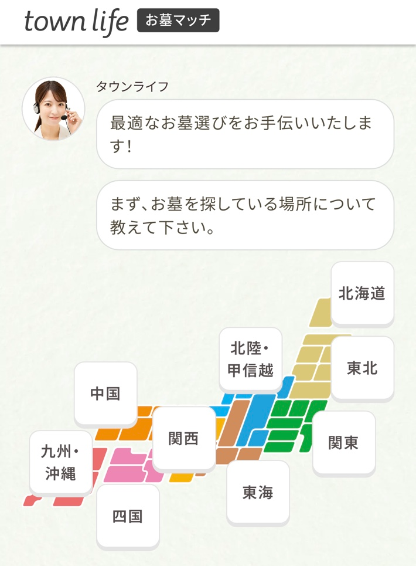
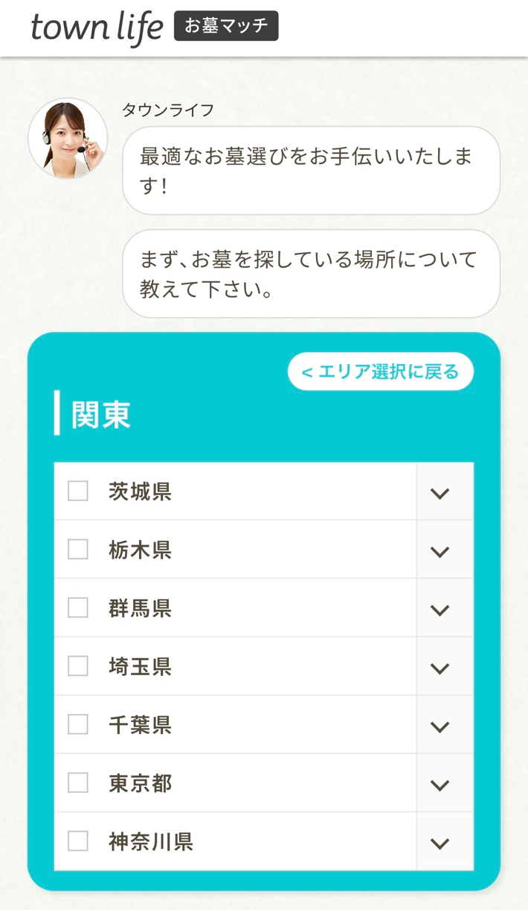
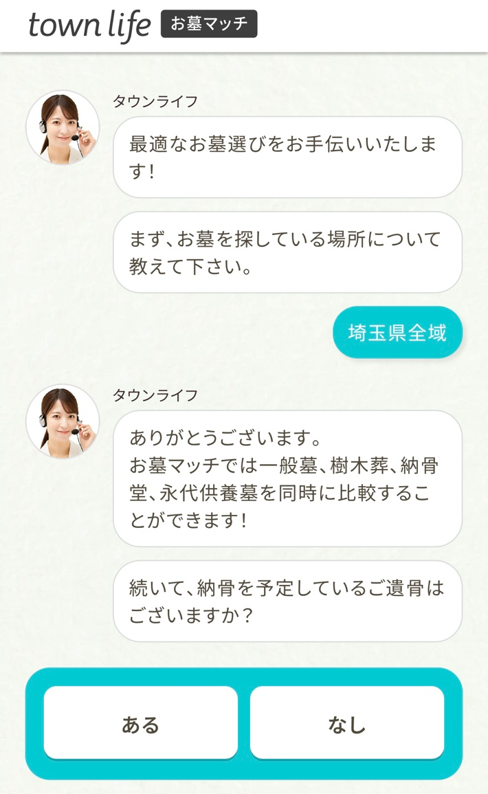
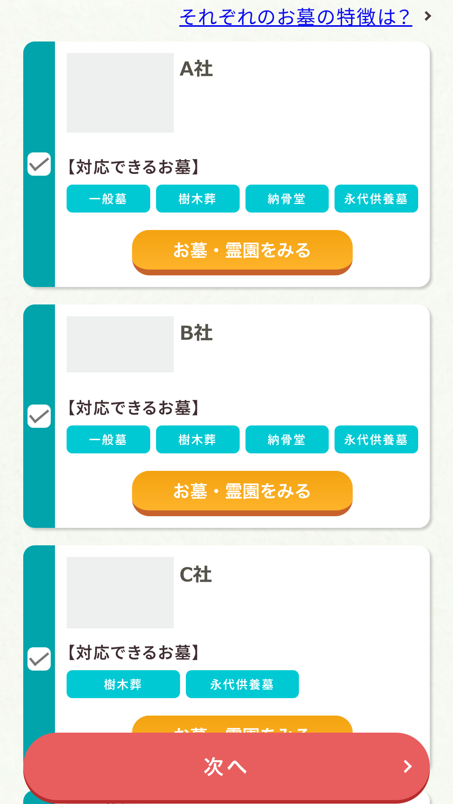
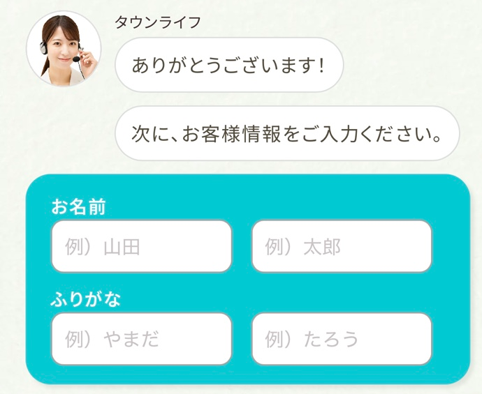

「お墓を買う」ときに、何にお金を払うのか。
ここを先に知っておくと、比較がかなりしやすくなります。
家族で考える、これからのお墓
一般墓の場合、墓地そのものを所有するのではなく、区画を使う権利を得るのが基本です。
さらに墓石代や管理費もかかるため、墓石の値段だけでは総額は分かりません。
場所・予算・家族の希望を伝えて、自分に合いそうなお墓を提案してもらう方法があります。
「お墓を買う」ときに、何にお金を払うのか。
ここを先に知っておくと、比較がかなりしやすくなります。
購入の前に
一般墓なら、墓地の区画を使うための費用、墓石の費用、その後の管理費などがあります。
一方、樹木葬や納骨堂、永代供養墓では、料金の仕組み自体が変わります。
まず「何にいくらかかるのか」を揃えてから比べる。これが、お墓購入で迷いにくくするポイントです。
3つめの「お墓の種類」だけ、少し補足します。いま選ばれているのは、この4つです。

同じ「お墓」でも、費用も、お参りの仕方も、管理の負担もまったく違います。つまり、どれを選ぶかで、見るべき霊園そのものが変わります。
見るポイントは4つ、種類も4つ。ここまでは、そんなに複雑ではありません。
しんどくなるのは、ここから先です。
ひとりで探すと
霊園を1つ調べるたびに、だいたいこうなります。
これを、候補の数だけ繰り返します。
しかも、お墓の種類によって金額の幅がかなりあります。

平均で見ても、一般墓は約152万円、樹木葬は約71.7万円。その差はおよそ80万円あります。
つまり、比べる相手は霊園の数だけではありません。種類 × 場所 × 費用の組み合わせを、1件ずつ確かめていくことになります。

30件見たあとでも、自分に合うかどうかは分からない。
考え方を変える
お墓探しがしんどくなるのは、先に「樹木葬にする」と決めて、それに合う霊園を探そうとするからです。決めた種類が合わなければ、また最初からやり直しになります。
順番を逆にします。

最初に決めるのは、お墓の種類ではなく、今わかっている希望だけ。あとは、候補を見ながら考えていけば大丈夫です。
それができるのが

これ、かなり便利です。
お墓の種類を最初に決めなくても、希望する地域や条件を伝えるだけ。
自分で1件ずつ霊園を探し回る代わりに、選んだ会社から提案を受け取って、まとめて比べられます。
しかも、価格だけじゃありません。
空き区画・納期・管理方法など、検索だけでは分かりにくいことまで直接相談できます。
「何から始めればいいか分からない」人ほど使いやすい。
提案を見てから考えられるので、最初から一般墓・樹木葬・納骨堂のどれかに決め打ちする必要もありません。
ここまでできて、提案・比較は無料。
1件ずつ探し回るより、かなりラクです。
約60秒／提案・比較無料
運営元のこと

お墓マッチを運営しているのは、タウンライフ株式会社。注文住宅・リフォーム・不動産・土地活用・外壁塗装など、10以上の住まい系サイトを全国で運営している会社です。
「複数の会社からまとめて提案をもらう」という仕組みを、ずっと作ってきた会社が、同じやり方をお墓に広げたのがこのサービスです。

「670,000人」はタウンライフシリーズ全体の累計で、お墓マッチ単体の数字ではありません。出典：タウンライフお墓マッチ／タウンライフ株式会社（2026年9月20日確認）。
さらに、ご成約で
最大10,000円分
QUOカードPayプレゼント
タウンライフ株式会社提供。ご成約が条件で、提案依頼だけでは対象になりません。適用条件・上限は公式サイトをご確認ください。「QUOカードPay」は株式会社クオカードの登録商標、スマートフォン専用です（同社へのお問い合わせはご遠慮ください）。
約60秒／提案・比較無料
実際に使うと、どうなるのか。
実際のケース
納骨堂
「比較の結果、
納骨堂を選びました。」

都会で暮らす家族が通いやすい場所を探して利用。ネット上の古い情報ではなく、今まさに空きがある駅近の納骨堂を複数提示してもらえたのが決め手でした。
天候に左右されずお参りできること、そして数十年先までの維持費を横並びで比べられたことで、屋内施設という選択に迷いがなくなったそうです。
N.Kさま（東京都足立区）

最初から納骨堂を探していたわけではありません。候補が並んだから、比べて決められたという順番です。
一般墓
「最新の“空き区画”を
確保できました」
自分で検索していた頃は、良さそうな場所は「満員」か「情報が古い」ものばかり。提携している店が一般の物件サイトには載っていない最新の空き区画を紹介してくれ、日当たりのいい希望エリアを確保できました。
Y.Sさま（東京都江戸川区）
樹木葬
「樹木葬を選んで
負担が解消しました」
「お墓は石のもの」という思い込みがありましたが、届いた提案を比べるうちに、管理費も跡継ぎの負担もない永代供養付き樹木葬を知りました。将来の管理手順まで示してもらえたので、確信を持って選べました。
N.Kさま（東京都足立区）
出典：タウンライフお墓マッチ 利用者の声（本文は要約）。個人の感想です。
事例1

ひとりで探していたら…
見積もり
約170万円
最初に相談した石材店では、一般墓の建立費用として約170万円の見積もりでした。ただ、相場が分からず「この金額が妥当なのか」と不安を感じていました。
お墓マッチを使ったら…！
見積もり
約130万円
複数の業者に問合せし、お墓の種類・費用を比較したら、同じエリア・同程度の条件で約130万円の提案が見つかり、約40万円費用を抑えられました。

事例2
通常2〜3か月の建墓が約1か月で完了
2〜3か月→約1か月
四十九日に間に合うか心配でしたが、希望納期を複数の事業者に相談でき、相談開始から約1か月で納骨まで終わりました。

事例3
車で片道2時間が徒歩15分に
2時間以上→約15分
通いやすいお墓が見つからず諦めかけていましたが、一括で比較したところ、家から近い場所に希望に合うお墓が見つかりました。
出典：タウンライフお墓マッチ掲載事例（本文は要約）。写真はイメージ、金額は一例です。個人の感想で、同じ結果を保証するものではありません。
金額が下がった人もいれば、日程や距離が解決した人もいます。何を優先するかは家族によって違うので、候補を並べてから決めるのが早いということです。
約60秒／提案・比較無料
操作そのものも、見ておきます。
使い方

地図から地域をタップするだけです。


文章を書く必要はありません。出てきた質問に答えるだけです。お墓の種類も、まとめて選べます。

霊園の一覧ではなく、相談できる会社が出ます。どの会社が何を扱っているかも、ここで分かります。
会社名・写真を匿名化した操作サンプルです。表示される会社は地域や条件により異なります。
左のチェック欄で選びます。全部に相談する必要はありません。

候補を見て、相談先を選んでから入力します。ここまで約60秒です。
約60秒／提案・比較無料
ここまでを、自分で探す場合と並べます。
まとめ

同じ「比べる」でも、比べ始める場所が違います。自分に関係のない霊園を30件見る時間が、そのまま要らなくなります。
お墓探しを、
「探す作業」から
「選ぶ作業」へ。
最後に、よく聞かれることだけ。
気になること
提案依頼から比較までは無料です。お墓の購入や契約には別途費用がかかります。
使えます。一般墓・永代供養墓・樹木葬・納骨堂などを複数選んで、まとめて相談できます。
なりません。チェックを入れた会社にだけ届きます。1社だけでも構いません。
最後に
一般墓か、樹木葬か、納骨堂か。それは候補を見てから決めれば間に合います。
自分で30件調べるより、出てきた候補から始めるほうが早い。まずは、自分の場合にどんな候補が出るか見てみてください。
約60秒／提案・比較無料